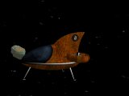
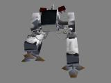
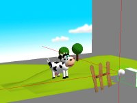

What is Chronos :
Chronos is the first high-quality real-time 3D screen saver for the Mac.
Anybody knows that screen savers are not really useful, but they are nice. What about a new generation of screen savers?
You're tired of seeing always the same flat 2D screen saver? You've got a brand new G3 and want a screen saver that uses the power of the new Rage 128? What about having cool animations that will blow your PC friends still using the Windoze standard screen saver with that jerky 3D text animation?
The answer is Chronos: Chronos is the only real-time 3D screen saver with awesome performances for the Mac. All you need is a PowerMac with 3D acceleration.
And most of all, Chronos is freeware!
Chronos modules :
The Chronos screen saver is provided with a bunch of amazing screen modules, including:
|
The exclusive French Touch cow in a typical French landscape! |

A space ship lost in the middle of an asteroid field. |

A walking Mech straight out from the upcoming Lords of Steel game. |
Create your own modules!
You can easily create your own screen saver modules using Fusion, French Touch 3D edtiting program. The possibilities are infinite but only limited by your imagination: you can for example create a module containing an animated version of the logo of your company.
The French Touch cow on stage
System requirements :
To be able to use D-Fusion, you need:
• a PCI PowerMacintosh - a G3 (all G3 Power Macintoshes have ATI 3D chips on board) or a PCI PowerMacintosh with a 3D accelerator card is highly recommended.
• System 7.1 or later.
• QuickDraw 3D Rave.
• the Appearance Manager.
Version history :
1.2 Sequencer now uses OpenTransport timing services
Brand new sequencer which includes Dropped frames support
Support for Fusion 3.1 file format
1.1 Support for Fusion 3.0 format: vertex per vertex transparency, 32 Bits textures wth 8 Bits alpha, skeletons...
1.0 First public release.
Download Chronos now!
| Package name |
Package content
|
Size |
| Chronos 1.2 |
Chronos application, users manual, a bunch of screen saver modules and the version history.
|
651 Kb |
You need StuffIt Expander to decompress the archive.
You must agree to the license located at the end of the users manual before starting to use Chronos.
Chronos may be freely distributed by online services, bulletin boards, shareware collection CDs or non-profit user groups, as long as it is not modified. This software may not be included in any commercial package without the authorization of French Touch.
Other related softwares :
To create screen saver modules for Chronos, you need to download the real-time 3D editor from French Touch: Fusion. It's a free program and is available on the Fusion web site: http://www.french-touch.net/fusion.
|